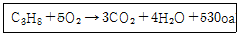
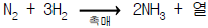
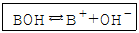
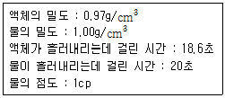

화학분석기능사 (2003-07-20 기출문제)
1과목: 일반화학
1. 11Na23의 옳은 전자 배열은 다음 어느 것인가?
- 1S2 , 2S2 , 2P6 , 3S1
- 1S2 , 2S2 , 2P6 , 3S2 , 3P6 , 3d4 , 4S1
- 1S2 , 2S2 , 2P6 , 2d1
- 1S2 , 2S2 , 2P6 , 2d10 , 3S2 , 3P1
(정답률: 88%)

2. 프로판가스(C3H8)의 연소반응식은 아래와 같다. 프로판가스 1g을 연소시켰을때 나오는 열량은 몇 ㎈인가?

- 12.⑤
- 23.69
- 120.5
- 530.6
(정답률: 60%)
3. 다음에 열거한 원소 중 이온화 에너지가 가장 큰 것은?
- C
- N
- O
- F
(정답률: 87%)
4. 다음 중 물에 대한 용해도가 가장 작은 것은?
- HCl
- NH3
- CO2
- HF
(정답률: 63%)
5. 다음 물질의 같은 농도의 수용액중 가장 강한 산성을 나타내는 것은?
- H2CO3
- HCl
- H3PO4
- CH3COOH
(정답률: 83%)
6. 결정수를 가지는 화합물을 무엇이라고 하는가?
- 이온화
- 수화물
- 승화물
- 포화용액
(정답률: 72%)
7. 기체는 다음 어느 경우에 가장 잘 용해하는가?
- 온도가 높고 압력이 낮을때
- 온도가 높고 압력이 높을때
- 온도가 낮고 압력이 높을때
- 온도가 낮고 압력이 낮을때
(정답률: 82%)
8. 탄산칼륨(K2CO3)의 성질에 대한 설명이다. 다음에서 잘못 되어 있는 것은 어느 것인가?
- 흰색 가루이며 조해성 물질이다.
- 수용액은 가수분해 되어 알칼리성을 나타낸다.
- 염산과 작용하여 CCl4가 생성된다.
- 수용액은 탄산가스와 작용하여 중탄산칼륨을 만든다.
(정답률: 71%)
9. 1.64g의 산화구리(CuO)를 수소로 환원하였더니 1.31g의 구리가 생겼다. 구리의 당량은 얼마인가?
- 11.76
- 21.76
- 31.76
- 41.76
(정답률: 49%)
10. 탄소와 모래를 전기로에 넣어서 가열하면 연마제로 쓰이는 물질이 생긴다. 다음 중 어느 것인가?
- 카아버런덤
- 카아바이드
- 카아본블랙
- 규소
(정답률: 65%)
11. 포도당의 분자식은?
- C6H12O6
- C12H22O11
- (C6H10O5)n
- C12H20O10
(정답률: 90%)
12. 수소 2g과 산소 24g을 반응시켜 물을 만들때 반응하지 않고 남아있는 기체의 무게는?
- 산소 4g
- 산소 8g
- 산소 12g
- 산소 16g
(정답률: 77%)
13. C2H2(아세틸렌)은 σ -결합을 몇 개 가지고 있는가?
- 1개
- 2개
- 3개
- 4개
(정답률: 65%)
14. 묽은 염산을 가할때 기체를 발생시키는 금속은?
- Cu
- Hg
- Mg
- Ag
(정답률: 72%)
15. 다음 유기화합물의 IUPAC명이 맞는 것은?
- CHCl3, 트리클로로메탄
- CH3CH2CH2OH, 2 - 프로판올
- CH ≡ C - CH3 2 - 프로핀
- Cl - CH2 - CH2 - Cl, 1,2 - 트리클로로메탄
(정답률: 69%)
16. 27℃, 8.2L에 질소를 3기압(atm)까지 채웠다. 이 그릇 속의 질소의 질량은 얼마인가? (단, N원자량 : 14, R = 0.082 L atm/㏖ K)
- 14g
- 24.6g
- 28g
- 42g
(정답률: 57%)
17. 25℃에서 0.01M의 NaOH 수용액에서 pH값은? (단, 이온화도는 1 이다.)
- 0.01
- 2
- 10
- 12
(정답률: 63%)
18. 0.1M NaOH 0.5L와 0.2M HCl 0.5L를 혼합한 용액의 몰농도(M)값은?
- 0.⑤M
- 0.1M
- 0.3M
- 1M
(정답률: 60%)
19. 다음중 에탄올과 아세트산에 소량의 진한황산을 넣고 반응시켰을 때 주생성물은?
- HCOONa
- (CH3)2CHOH
- CH3COOC2H5
- HCHO
(정답률: 55%)
20. 다음 화합물 중 반응성이 가장 큰 것은?
- CH3 - CH CH2
- CH3 - CH = CH - CH3
- CH ≡ C - CH3
- C4H8
(정답률: 81%)
2과목: 분석화학
21. 다음 중 전해질에 속하는 것은?
- 설탕
- 에탄올
- 포도당
- 아세트산
(정답률: 63%)
22. 0.1M의 아세트산용액 25ml와 0.4M의 NaOH용액 25ml를 섞은 혼합용액의 NaOH농도는?
- 0.15M
- 0.25M
- 0.5M
- 0.3M
(정답률: 35%)
23. 알데히드(RCHO)의 검출 반응에 이용되는 은거울 반응에서 사용되는 암모니아성 질산은 용액을 말하는 것은?
- 톨렌 시약
- 펠링 용액
- 에테르 용액
- 알돌 용액
(정답률: 48%)
24. 다음 원소 중 원자질량을 위한 표준으로 이용되는 것은?
- 12C
- 16O
- 13C
- 1H
(정답률: 82%)
25. 다음 등전자 이온중에서 이온반지름이 가장 큰 것은?
- 12Mg2+
- 11Na+
- 10Ne
- 9F-
(정답률: 70%)
26. 72℃에서 질산칼륨(KNO3)의 포화용액 200g을 18℃로 냉각시키면 몇 g의 질산칼륨이 결정으로 석출되는가? (단, 질산칼륨의 용해도(g/100g)는 18℃ 에서 30, 72℃에서 150이다.)(오류 신고가 접수된 문제입니다. 반드시 정답과 해설을 확인하시기 바랍니다.)
- 48g
- 96g
- 120g
- 240g
(정답률: 24%)
27. 하버 - 보시법에 의하여 암모니아를 합성하고자 한다. 다음 어떠한 반응조건을 주면 많은 양의 암모니아를 얻을 수 있는가?

- 많은 양의 촉매를 가한다.
- 압력을 낮추고 온도를 높인다.
- 질소와 수소의 분압을 높이고 온도를 낮춘다.
- 생성되는 암모니아를 제거하고 온도를 높인다.
(정답률: 58%)
28. 다음 중 화학평형 상수에 영향을 주는 인자는?
- 표면적의 크고 적음
- 촉매나 부촉매의 유무
- 반응열의 발생 및 흡수
- 화합물의 부피
(정답률: 68%)
29. 양이온 제1족 부터 제5족 까지의 혼합 연습액으로부터 양이온 제2족을 분리시키려고 한다. 이 때의 액성은 어느것인가?
- 중성
- 알칼리성
- 산성
- 액성과는 관계가 없다.
(정답률: 76%)
30. 금속 지시약의 설명으로 옳지 않는 것은?
- 금속염이 주성분이다.
- 킬레이트 시약이다.
- 킬레이트 화합물을 만든다.
- 자신의 고유색을 갖는다.
(정답률: 60%)
31. 다음 이온중 제5족 양이온이 아닌 것은?(오류 신고가 접수된 문제입니다. 반드시 정답과 해설을 확인하시기 바랍니다.)
- Mn2+
- Ba2+
- Sr2+
- Ca2+
(정답률: 53%)
32. Cr과 Fe 수산화물의 혼합물을 분리하는데 쓰이는 시약은?
- NaOH
- Na2HPO4
- Cu(OH)2
- NH4OH
(정답률: 49%)
33. 칭량병+BaCl2ㆍ2H2O의 무게가 17.994g이고 이중 BaCl2ㆍ2H2O의 무게가 1.1318g이었다. 칭량병+염화바륨의 무게가 17.8272g 일 때를 함량으로 간주하여 실험을 중단했다면 결정수의 백분율은?
- 16.12%
- 14.74%
- 16.52%
- 14.25%
(정답률: 57%)
34. 킬레이트 적정에서 EDTA를 사용할때 부반응이 생기지 않으려면 금속ion 이 포함된 시료액의 pH를 어떻게 해야 하는가?
- NH4OH + NH4Cl완충액을 써서 pH를 10 이상으로 해야한다.
- EBT 지시약을 써서 은폐제 KCN 을 넣고 pH를 6∼7로 해야한다.
- MX 지시약과 KCN을 넣고 pH를 12로 고정한다.
- MH3 + NH4AC 완충액을 넣고 pH를 7로 고정한다.
(정답률: 58%)
35. 요오드 적정법에 가장 적합한 액성의 pH는 다음중 어느것인가?
- pH = 3∼6
- pH = 5∼8
- pH = 8∼10
- pH = 9∼13
(정답률: 77%)
36. As2O3 중의 As의 1g당량은 얼마인가? (단, As의 원자량은 74.93임)
- 12.49
- 24.98
- 74.93
- 149.86
(정답률: 65%)
37. 0.01M Ca2+ 50.0mL와 반응하려면, 0.⑤M EDTA 몇 mL가 필요한가?
- 10
- 25
- 50
- 75
(정답률: 69%)
38. 다음 중 용액의 전리도(α)를 바르게 나타낸 것은?
- α = 전리된 몰농도 / 분자량
- α = 분자량 / 전리된 몰농도
- α = 전체 몰농도 / 전리된 몰농도
- α = 전리된 몰농도 / 전체 몰농도
(정답률: 86%)
39. 기체의 용해도에 관한 설명 중 옳은 것은?
- 이산화탄소는 물에 잘 녹는다.
- 무극성인 기체는 물에 녹기가 더욱 쉽다.
- 기체는 온도가 올라가면 물에 녹기 쉽다.
- 무극성인 기체는 용해하는 질량이 압력에 비례한다.
(정답률: 65%)
40. 다음중 약염기 BOH의 이온화 상수(Kb)는?

- [BOH]/[B+][OH-]
- [BOH][B+]/[OH-]
- [B+][OH-]/[BOH]
- [B+]/[BOH][OH-]
(정답률: 70%)
3과목: 기기분석
41. 전도도의 단위는?
- R(오옴)
- ℧(모오)
- A(암페어)
- mV(미리볼트)
(정답률: 71%)
42. Fe+2 를 황산산성에서 MnO4- 로 적정할때 E° = 0.78V 이고 Fe+2 의 80% 가 Fe+3로 산화되었을때 전위차는(V)? (단, E = E° +0.⑤91 logC)
- 2.7210
- 0.8156
- 0.7210
- 2.8156
(정답률: 52%)
43. 다음은 굴절계 취급에 따른 주의 사항이다. 틀린 것은?
- 광원은 인공광원 또는 햇빛 중 어느 것이든지 편리한 것을 쓰도록 한다.
- 경계선이 파형으로 나타날 때에는 프리즘의 온도가 일정하다는 증거다.
- 시료용액의 측정에서 눈금을 읽을 때에는 읽기 전과 읽은 다음의 비이커의 온도를 측정하는 것이 좋다.
- 알코올의 경우에는 입구가 넓은 비이커보다는 휘발성 액체용 그릇을 쓰는 것이 좋다.
(정답률: 55%)
44. 가스 크로마토그라피의 전개가스(carrier gas)의 유속이 40mL/min 이고 기록지의 속도가 5㎝/min 이며 꼭지점까지의 길이가 20㎝ 일때 머무는 부피(Rentention Volume)는 얼마인가?
- 160mL
- 240mL
- 320mL
- 400mL
(정답률: 49%)
45. 컬럼 크로마토그래피의 용매는 어떠한 것을 선택하는 것이 좋은가?
- 흡착시는 극성, 용출시는 비극성 용매
- 흡착시는 비극성, 용출시는 극성 용매
- 용출, 흡착시 모두 극성 용매
- 용출, 흡착시 모두 비극성 용매
(정답률: 64%)
46. 구형 액체 크로마토 그래피와 최신형 액체 크로마토 그래피의 장점을 나타낸 것이다. 이 중 최신형 액체 크로마토 그래피의 장점에 해당되지 않는 것은?
- 분리시간이 짧고 분리도가 높다.
- 정확도 및 감도가 크다.
- 실험법이 간단하고 일반 분리실험으로 좋다.
- 자동화가 가능하다.
(정답률: 66%)
47. 다음중 이온화경향이 큰 것부터 순서대로 나열이 바르게 된 것은?
- Li ＞ K ＞ Na ＞ Al ＞ Cu
- Al ＞ K ＞ Li ＞ Cu ＞ Na
- Na ＞ K ＞ Li ＞ Cu ＞ Al
- Cu ＞ Li ＞ K ＞ Al ＞ Na
(정답률: 72%)
48. 발연황산을 피부에 흘렸을 때 응급처지는 다량의 물로 씻고 최종적으로 어느 물질의 수용액으로 씻어 주는가?
- 탄산나트륨
- 수산화나트륨
- 암모니아수
- 탄산수소나트륨
(정답률: 77%)
49. 오스트발트 점도계를 사용하여 아래의 값을 얻었다. 이 액체의 점도는 얼마인가?

- 0.9021cp
- 1.0430cp
- 0.9021p
- 1.0430p
(정답률: 69%)
50. 전해 분석은 일반 화학 분석과 비교하여 다음과 같은 특징이 있다. 그 특징이 아닌 것은?
- 신속한 분석을 할 수 있다.
- 모든 화합물을 분석할 수 있다.
- 정확한 분석 결과를 얻을 수 있다.
- 침전, 여과 등의 분석 조작을 생략할 수 있다.
(정답률: 70%)
51. 적외선 분광 광도계의 흡수 스펙트럼으로부터 유기 물질의 구조를 결정하는 방법 중 카르보닐기가 강한 흡수를 일으키는 파장의 영역은?
- 1300∼1000cm-1
- 1820∼1660cm-1
- 3400∼2400cm-1
- 3600∼3300cm-1
(정답률: 80%)
52. 전위차 적정에 의한 당량점 측정 실험에서 필요하지 않은 재료는?
- 0.1N-HCl
- 0.1N-NaOH
- 증류수
- 황산구리
(정답률: 82%)
53. 흡광광도 분석장치의 구성이 맞는 것은?
- 광원부 - 시료부 - 파장선택부 - 측광부
- 광원부 - 파장선택부 - 시료부 - 측광부
- 광원부 - 시료부 - 측광부 - 파장선택부
- 광원부 - 파장선택부 - 측광부 - 시료부
(정답률: 72%)
54. 실험 중에 지켜야할 유의사항이 아닌 것은?
- 반드시 실험복을 착용한다.
- 실험과정은 반드시 노트에 기록한다.
- 실험대 위에는 항상 깨끗하게 정돈되어 있어야 한다.
- 실험을 빨리 하기 위해서는 두 가지 이상의 실험을 동시에 한다.
(정답률: 94%)
55. 기체크로마토그래피의 충전분리관 중 아민류, 아세틸렌, 테레핀류 등의 분석시 충전분리관 재질로 적합하지 않은 것은?
- 알루미늄
- 스텐인리스강
- 유리
- 구리
(정답률: 60%)
56. 기체-액체 크로마토그래피(GLC)에 정지상과 이동상을 올바르게 표현한 것은?
- 정지상-고체, 이동상-기체
- 정지상-고체, 이동상-액체
- 정지상-액체, 이동상-기체
- 정지상-액체, 이동상-고체
(정답률: 86%)
57. 원자 흡수 분광 광도계에 사용하는 속빈 음극등(hollow cathode lamp)에 대한 설명 중 잘못된 것은?
- 아르곤 기체가 채워져 있다.
- 음극의 재질은 분석 원소의 순수한 금속이다.
- 양극에는 낮은 전압을 걸어준다.
- 양극의 재질은 텅스텐이다.
(정답률: 63%)
58. 다음 결합 중 적외선흡수분광법에서 파수가 가장 큰 것은?
- C-H 결합
- C-N 결합
- C-O 결합
- C-Cl 결합
(정답률: 68%)
59. 산과 염기의 농도 분석을 전위차법으로 할 때 사용하는 전극은?
- 포화 칼로멜 전극 - 유리 전극
- 포화 칼로멜 전극 - 은 전극
- 은 전극 - 유리 전극
- 백금 전극 - 유리 전극
(정답률: 70%)
60. 화학 전지에서 염다리(salt bridge)는 무엇으로 만드는가?
- 포화 KCl 용액과 젤라틴
- 포화 염산 용액과 우뭇가사리
- 황산 알루미늄과 황산칼륨
- 포화 KCl과 황산알루미늄
(정답률: 76%)
11Na23의 전자 구성은 1S2 , 2S2 , 2P6 , 3S1입니다. 이는 전자 껍질 구조에서 가장 외곽 전자가 3S 궤도에 1개 있고, 그 이전 궤도들에는 각각 2, 2, 6개의 전자가 존재하기 때문입니다. 이러한 전자 구성은 주기율표에서 11번 원소인 나트륨의 전자 구성과 일치합니다.